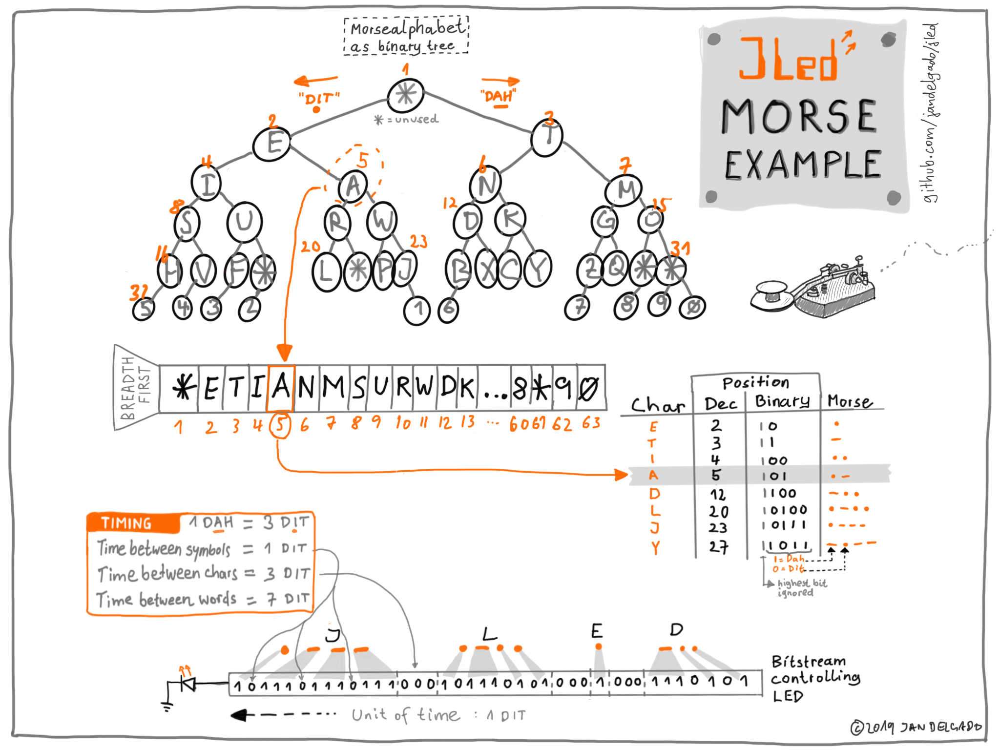

morse
JLed morse example
This examples demonstrates an efficient method to generate morse code on an micro controller like the Arduino.
The morse example uses the morse alphabet encoded in a binary tree to
generate morse code using a JLed user defined brightness class. The text
to be morsed is transformed into morse code and then transformed into a
sequence of 1 and 0 which are written out to a GPIO controlling a LED or
a sound generator.

Author
Jan Delgado
morse.ino
// Copyright (c) 2019 Jan Delgado <jdelgado[at]gmx.net>
// JLed user defined brightness morse example
// https://github.com/jandelgado/jled
#include "morse_effect.h" // NOLINT
#include <Arduino.h>
#include <jled.h>
MorseEffect morseEffect("HELLO JLED");
auto morseLed =
JLed(LED_BUILTIN).UserFunc(&morseEffect).DelayAfter(2000).Forever();
void setup() {}
void loop() { morseLed.Update(); }
bitset.h
// Copyright (c) 2019 Jan Delgado <jdelgado[at]gmx.net>
// https://github.com/jandelgado/jled
#ifndef EXAMPLES_MORSE_BITSET_H_
#define EXAMPLES_MORSE_BITSET_H_
// a simple bit set with capacity of N bits, just enough for the morse demo
class Bitset {
private:
size_t n_;
uint8_t* bits_;
protected:
// returns num bytes needed to store n bits.
static constexpr size_t num_bytes(size_t n) {
return n > 0 ? ((n - 1) >> 3) + 1 : 0;
}
public:
Bitset() : Bitset(0) {}
Bitset(const Bitset& b) : Bitset() { *this = b; }
explicit Bitset(size_t n) : n_(n), bits_{new uint8_t[num_bytes(n)]} {
memset(bits_, 0, num_bytes(n_));
}
Bitset& operator=(const Bitset& b) {
if (&b == this) return *this;
const auto size_new = num_bytes(b.n_);
if (num_bytes(n_) != size_new) {
delete[] bits_;
bits_ = new uint8_t[size_new];
n_ = b.n_;
}
memcpy(bits_, b.bits_, size_new);
return *this;
}
virtual ~Bitset() {
delete[] bits_;
bits_ = nullptr;
}
void set(size_t i, bool val) {
if (val)
bits_[i >> 3] |= (1 << (i & 7));
else
bits_[i >> 3] &= ~(1 << (i & 7));
}
bool test(size_t i) const { return (bits_[i >> 3] & (1 << (i & 7))) != 0; }
size_t size() const { return n_; }
};
#endif // EXAMPLES_MORSE_BITSET_H_
morse.h
// Copyright (c) 2019 Jan Delgado <jdelgado[at]gmx.net>
// https://github.com/jandelgado/jled
#include <Arduino.h>
#include <inttypes.h>
#include <stddef.h>
#include "bitset.h" // NOLINT
#ifndef EXAMPLES_MORSE_MORSE_H_
#define EXAMPLES_MORSE_MORSE_H_
// The Morse class converts a text sequence into a bit sequence representing
// a morse code sequence.
class Morse {
// pre-ordered tree of morse codes. Bit 1 = 'dah', 0 = 'dit'.
// Position in string corresponds to position in binary tree starting w/ 1
// see https://www.pocketmagic.net/morse-encoder/ for info on encoding
static constexpr auto LATIN =
"*ETIANMSURWDKGOHVF*L*PJBXCYZQ**54*3***2*******16*******7***8*90";
static constexpr auto DURATION_DIT = 1;
static constexpr auto DURATION_DAH = 3 * DURATION_DIT;
static constexpr auto DURATION_PAUSE_CHAR = DURATION_DAH;
static constexpr auto DURATION_PAUSE_WORD = 7 * DURATION_DIT;
protected:
char upper(char c) const { return c >= 'a' && c <= 'z' ? c - 32 : c; }
bool isspace(char c) const { return c == ' '; }
// returns position of char in morse tree. Count starts with 1, i.e.
// E=2, T=3, etc.
size_t treepos(char c) const {
auto i = 1u;
while (LATIN[i++] != c) {
}
return i;
}
// returns uint16_t with size of morse sequence (dit's and dah's) in MSB
// and the morse sequence in the LSB
uint16_t pos_to_morse_code(int code) const {
uint8_t res = 0;
uint8_t size = 0;
while (code > 1) {
size++;
res <<= 1;
res |= (code & 1);
code >>= 1;
}
return res | (size << 8);
}
template <typename F>
uint16_t iterate_sequence(const char* p, F f) const {
// call f(count,val) num times, incrementing count each time
// and returning num afterwards.
auto set = [](int num, int count, bool val, F f) -> int {
for (auto i = 0; i < num; i++) f(count + i, val);
return num;
};
auto bitcount = 0;
while (*p) {
const auto c = upper(*p++);
if (isspace(c)) { // space not part of alphabet, treat separately
bitcount += set(DURATION_PAUSE_WORD, bitcount, false, f);
continue;
}
const auto morse_code = pos_to_morse_code(treepos(upper(c)));
auto code = morse_code & 0xff; // dits (0) and dahs (1)
auto size = morse_code >> 8; // number of dits and dahs in code
while (size--) {
bitcount += set((code & 1) ? DURATION_DAH : DURATION_DIT,
bitcount, true, f);
// pause between symbols := 1 dit
if (size) {
bitcount += set(DURATION_DIT, bitcount, false, f);
}
code >>= 1;
}
if (*p && !isspace(*p)) {
bitcount += set(DURATION_PAUSE_CHAR, bitcount, false, f);
}
}
return bitcount;
}
public:
// returns ith bit of morse sequence
bool test(uint16_t i) const { return bits_->test(i); }
// length of complete morse sequence in in bits
size_t size() const { return bits_->size(); }
Morse() : bits_(new Bitset(0)) {}
explicit Morse(const char* s) {
const auto length = iterate_sequence(s, [](int, bool) -> void {});
auto bits = new Bitset(length);
iterate_sequence(s, [bits](int i, bool v) -> void { bits->set(i, v); });
bits_ = bits;
}
~Morse() { delete bits_; }
// make sure that the following, currently not needed, methods are not used
Morse(const Morse&m) {*this = m;}
Morse& operator=(const Morse&m) {
delete bits_;
bits_ = new Bitset(*m.bits_);
return *this;
}
private:
// stores morse bit sequence
const Bitset* bits_ = nullptr;
};
#endif // EXAMPLES_MORSE_MORSE_H_
morse_effect.h
// Copyright (c) 2019 Jan Delgado <jdelgado[at]gmx.net>
// https://github.com/jandelgado/jled
#ifndef EXAMPLES_MORSE_MORSE_EFFECT_H_
#define EXAMPLES_MORSE_MORSE_EFFECT_H_
#include <jled.h>
#include "morse.h" // NOLINT
class MorseEffect : public jled::BrightnessEvaluator {
Morse morse_;
// duration of a single 'dit' in ms
const uint16_t speed_;
public:
explicit MorseEffect(const char* message, uint16_t speed = 200)
: morse_(message), speed_(speed) {}
uint8_t Eval(uint32_t t) const override {
const auto pos = t / speed_;
if (pos >= morse_.size()) return 0;
return morse_.test(pos) ? 255 : 0;
}
uint16_t Period() const override { return (morse_.size() + 1) * speed_; }
};
#endif // EXAMPLES_MORSE_MORSE_EFFECT_H_